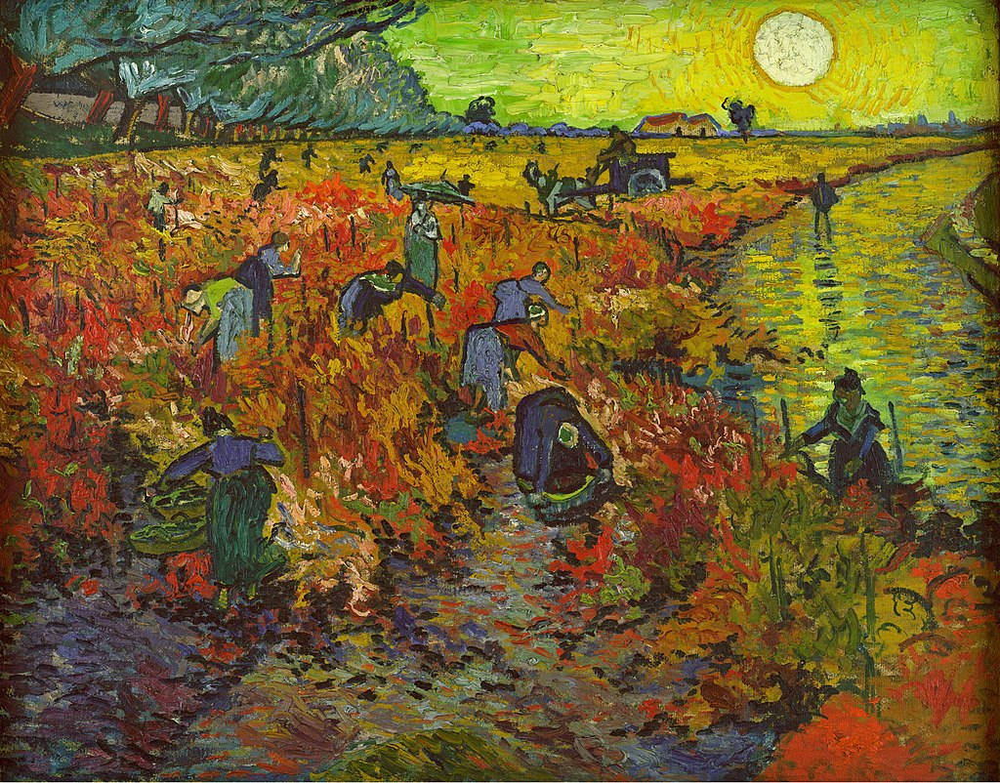

<head>
<meta charset="UTF-8" />
<meta name="keywords" content="drawing, painting" />
<meta name="description" content="drawings by Sunjy" />
<title>Sunjy</title>
<link rel="shortcut icon" type="image/x-icon" href="../../mImages/mCommon/favicon.ico" media="screen" />
<link rel="stylesheet" type="text/css" href="../../mCsses/mCommon/mCssA.css" />
<link rel="stylesheet" type="text/css" href="../../mCsses/mCommon/mCssB.css" />
<link rel="stylesheet" type="text/css" href="../../mCsses/mCommon/mCssC.css" />
<link rel="stylesheet" type="text/css" href="../../mCsses/mCommon/mCssD.css" />
<link rel="stylesheet" type="text/css" href="../../mCsses/mContent/mCssA.css" />
<link rel="stylesheet" type="text/css" href="../../mCsses/mContent/mCssB.css" />
<link rel="stylesheet" type="text/css" href="../../mCsses/mContent/mCssC.css" />
<link rel="stylesheet" type="text/css" href="../../mCsses/mContent/mCssD.css" />
</head>
<script type="text/javascript" src="../../mScripts/mContent/mContentAA.js" /></script>
<script type="text/javascript" src="../../mScripts/mContent/mContentAB.js" /></script>
<script type="text/javascript" src="../../mScripts/mContent/mContentAC.js" /></script>
<script type="text/javascript" src="../../mScripts/mContent/mContentAD.js" /></script>
<script type="text/javascript"></script> 
<script type="text/javascript">
document.write('<div class="mImgAbsolute"></div>');
/*
document.write('<p class="mFontSizeBColor" />From a white paper...</p>');
document.write('<table class="center"><tr><td>');
document.write('');
document.write('</td></tr></table>');
*/
</script>


<script type="text/javascript">
document.write('<p class="mFontSizeBColor" />The Red Vineyard</p>');
document.write('<p class="mFontSizeSColor" />By Vincent van Gogh. “The Red Vineyard” depicts workers in a vineyard, and it is the only painting van Gogh sold during his lifetime. Van Gogh uniquely captured the mellowed tones and glistening light of the evening sun reflecting in the river and the autumn fields.<br><br>This painting was painted two weeks after Gauguin arrived in Arles and moved in with Van Gogh. Van Gogh was excited by his idea of starting an artists’ colony. He was keen to share his studio with Gauguin.<br><br>The two artists had met two years previously, and Van Gogh was in awe of Gauguin. The relationship, however, ended in disaster culminating in Van Gogh’s self-mutilation. <br><br>However, before this incident, the two artists worked on similar projects, and Gauguin influenced Van Gogh’s paintings of this time. The Gauguin’s colorful works inspired Van Gogh to use more colors for this painting, which he continued to do in his later works.<br><br>Van Gogh brightened his palette, experimented even more with shorter brushstrokes, impasto, and complementary colors.<br><br>Van Gogh painted this canvas, while Gauguin was painting scenes with Breton Women, clothed in the traditional costumes.<br><br>Van Gogh was particularly delighted with a vineyard, whose colors were turning to autumnal reds and yellows. <br><br>Van Gogh wrote to Eugene Boch mentioning his project to paint “The Red Vineyard,” stating:<br><br>“I have to go to work in the vineyard, near Mont Majour.<br> It’s all purplish yellow-green under the blue sky, a beautiful, color motif.”<br><br>Van Gogh While created this painting at the Yellow House from memory and his imagination, the day after, he walked through the nearby wine fields, near Montmajour Abbey during the grape harvest. <br><br>Van Gogh depicted the vine harvest with the sun in a yellow sky. The sunlight radiates the landscape, with the gold-colored river and the vine leaves of the painting flashing red.<br><br>The people picking vines, mainly dressed in blue, are working in the vineyard. The workers in the background are depicted as silhouettes.<br><br>The figures of people bringing in the harvest were a symbol of life, which is presented by Van Gogh as daily toil.<br><br>A row of blue and green trees in the background leads to the farmhouse. Van Gogh has used diagonal lines that move from the sun and its horizon to the bottom left of the painting guided by the river and the row of trees.<br><br>“The Red Vineyard” was exhibited for the first time at the annual exhibition of Les XX, 1890 in Brussels, and sold for 400 Francs equal to about $2,000 today.<br><br>This painting was purchased by Anna Boch, an impressionist painter, member of Les XX, and art collector from Belgium. Anna was the sister of Eugène Boch, another impressionist painter and a friend of Van Gogh. Van Gogh painted Boch’s portrait in Arles in 1888.<br><br>The painting was later purchased, in 1909, from a Paris art gallery by Ivan Morozov. After the Russian Revolution, the picture was nationalized by the Bolsheviks and eventually passed to Moscow’s Pushkin Museum of Fine Arts.</p>');
document.write('<table class="center" /><tr><td>');
document.write('<br>This painting was painted two weeks after Gauguin arrived in Arles and moved in with Van Gogh. Van Gogh was excited by his idea of starting an artists’ colony. He was keen to share his studio with Gauguin.<br><br>The two artists had met two years previously, and Van Gogh was in awe of Gauguin. The relationship, however, ended in disaster culminating in Van Gogh’s self-mutilation. <br><br>However, before this incident, the two artists worked on similar projects, and Gauguin influenced Van Gogh’s paintings of this time. The Gauguin’s colorful works inspired Van Gogh to use more colors for this painting, which he continued to do in his later works.<br><br>Van Gogh brightened his palette, experimented even more with shorter brushstrokes, impasto, and complementary colors.<br><br>Van Gogh painted this canvas, while Gauguin was painting scenes with Breton Women, clothed in the traditional costumes.<br><br>Van Gogh was particularly delighted with a vineyard, whose colors were turning to autumnal reds and yellows. <br><br>Van Gogh wrote to Eugene Boch mentioning his project to paint “The Red Vineyard,” stating:<br><br>“I have to go to work in the vineyard, near Mont Majour.<br> It’s all purplish yellow-green under the blue sky, a beautiful, color motif.”<br><br>Van Gogh While created this painting at the Yellow House from memory and his imagination, the day after, he walked through the nearby wine fields, near Montmajour Abbey during the grape harvest. <br><br>Van Gogh depicted the vine harvest with the sun in a yellow sky. The sunlight radiates the landscape, with the gold-colored river and the vine leaves of the painting flashing red.<br><br>The people picking vines, mainly dressed in blue, are working in the vineyard. The workers in the background are depicted as silhouettes.<br><br>The figures of people bringing in the harvest were a symbol of life, which is presented by Van Gogh as daily toil.<br><br>A row of blue and green trees in the background leads to the farmhouse. Van Gogh has used diagonal lines that move from the sun and its horizon to the bottom left of the painting guided by the river and the row of trees.<br><br>“The Red Vineyard” was exhibited for the first time at the annual exhibition of Les XX, 1890 in Brussels, and sold for 400 Francs equal to about $2,000 today.<br><br>This painting was purchased by Anna Boch, an impressionist painter, member of Les XX, and art collector from Belgium. Anna was the sister of Eugène Boch, another impressionist painter and a friend of Van Gogh. Van Gogh painted Boch’s portrait in Arles in 1888.<br><br>The painting was later purchased, in 1909, from a Paris art gallery by Ivan Morozov. After the Russian Revolution, the picture was nationalized by the Bolsheviks and eventually passed to Moscow’s Pushkin Museum of Fine Arts." />');
document.write('</td></tr></table>');
</script>


